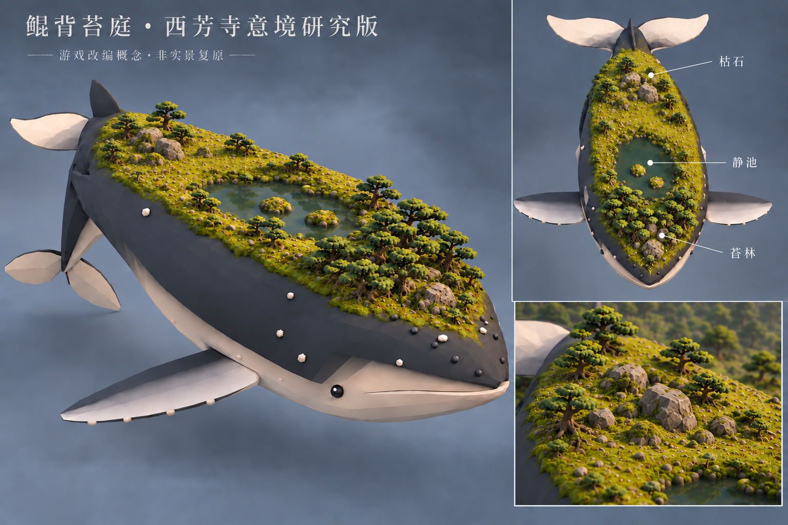
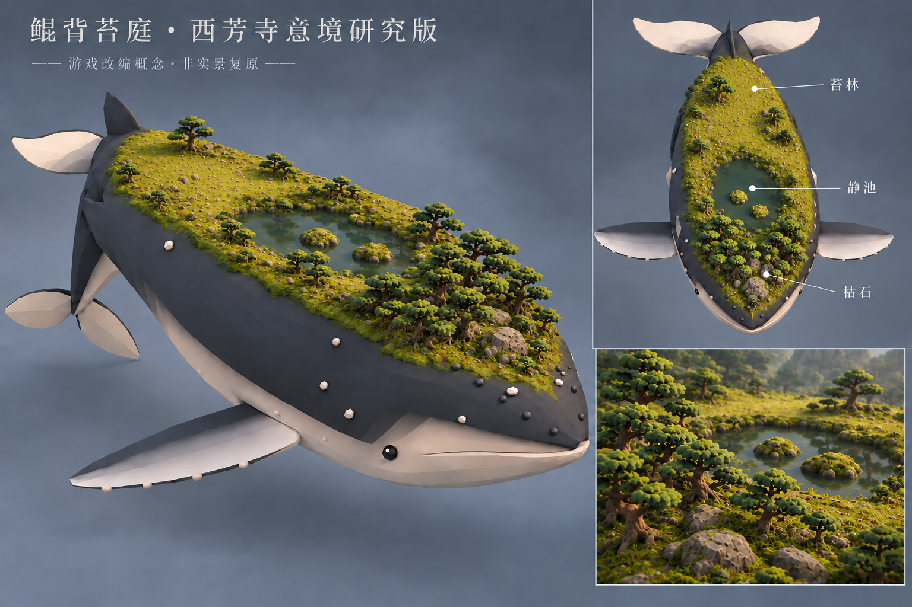
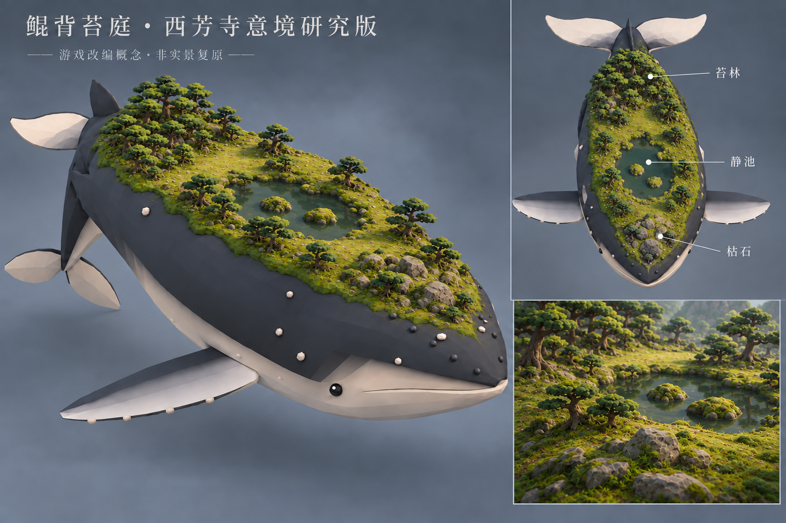

鲲背苔庭 · 头松尾石布局
根据两次位置标注，最新布局形成清楚的纵向节奏：头部密松、中央静池、后部枯石。密松林从尾侧迁至鲲头，枯石组再从头部迁至后背/尾侧；两者都只移动、不复制。
v7：头部密松 · 中央静池 · 后部枯石

主视图和俯视图采用同一空间关系。头部树群负责伏击遮蔽，池边与尾侧保留开阔苔面，枯石在后部形成安静的收束点。v6：密松已移到头部

确认密松迁移方向；此版枯石仍在头部，已由v7修正。v5：位置修订前

密松集中在尾侧、枯石位于头部，是两次用户标注的调整起点。这是游戏改编概念，还不是引擎实景。下一步需把三个分区映射到实际鲲网格，再在Web和Godot中校验树距、遮蔽、行走坡度、静池曲面和枯石碰撞。
调研：西芳寺官方介绍、实景与境内图 · 京都市文化财资料
v7生成记录（内置 imagegen） · v6生成记录 · 松树两轮 Blender 对照 · 散置踏步石 · 伏击时序与未完成项